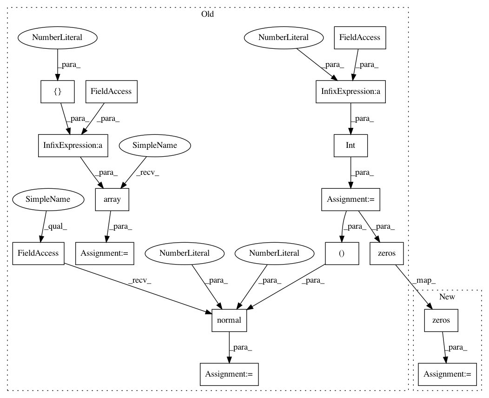

cf65784f7297dca491436112b9a5689ecd7533ec,cogan/cogan.py,COGAN,train,#COGAN#,117
Before Change
X2 = X_train[int(X_train.shape[0]/2):]
X2 = scipy.ndimage.interpolation.rotate(X2, 90, axes=(1, 2))
half_batch = int(batch_size / 2)
for epoch in range(epochs):
// ----------------------
// Train Discriminators
// ----------------------
// Select a random half batch of images
idx = np.random.randint(0, X1.shape[0], half_batch)
imgs1 = X1[idx]
imgs2 = X2[idx]
noise = np.random.normal(0, 1, (half_batch, 100))
// Generate a half batch of new images
gen_imgs1 = self.g1.predict(noise)
gen_imgs2 = self.g2.predict(noise)
// Train the discriminators
d1_loss_real = self.d1.train_on_batch(imgs1, np.ones((half_batch, 1)))
d2_loss_real = self.d2.train_on_batch(imgs2, np.ones((half_batch, 1)))
d1_loss_fake = self.d1.train_on_batch(gen_imgs1, np.zeros((half_batch, 1)))
d2_loss_fake = self.d2.train_on_batch(gen_imgs2, np.zeros((half_batch, 1)))
d1_loss = 0.5 * np.add(d1_loss_real, d1_loss_fake)
d2_loss = 0.5 * np.add(d2_loss_real, d2_loss_fake)
// ------------------
// Train Generators
// ------------------
noise = np.random.normal(0, 1, (batch_size, 100))
// The generators wants the discriminators to label the generated samples
// as valid (ones)
valid = np.array([1] * batch_size)
// Train the generators
g_loss = self.combined.train_on_batch(noise, [valid, valid])
After Change
// Adversarial ground truths
valid = np.ones((batch_size, 1))
fake = np.zeros((batch_size, 1))
for epoch in range(epochs):
// ----------------------
In pattern: SUPERPATTERN
Frequency: 3
Non-data size: 16
Instances
Project Name: eriklindernoren/Keras-GAN
Commit Name: cf65784f7297dca491436112b9a5689ecd7533ec
Time: 2018-05-15
Author: eriklindernoren@live.se
File Name: cogan/cogan.py
Class Name: COGAN
Method Name: train
Project Name: eriklindernoren/Keras-GAN
Commit Name: cf65784f7297dca491436112b9a5689ecd7533ec
Time: 2018-05-15
Author: eriklindernoren@live.se
File Name: bgan/bgan.py
Class Name: BGAN
Method Name: train
Project Name: eriklindernoren/Keras-GAN
Commit Name: cf65784f7297dca491436112b9a5689ecd7533ec
Time: 2018-05-15
Author: eriklindernoren@live.se
File Name: lsgan/lsgan.py
Class Name: LSGAN
Method Name: train
Project Name: eriklindernoren/Keras-GAN
Commit Name: cf65784f7297dca491436112b9a5689ecd7533ec
Time: 2018-05-15
Author: eriklindernoren@live.se
File Name: cogan/cogan.py
Class Name: COGAN
Method Name: train